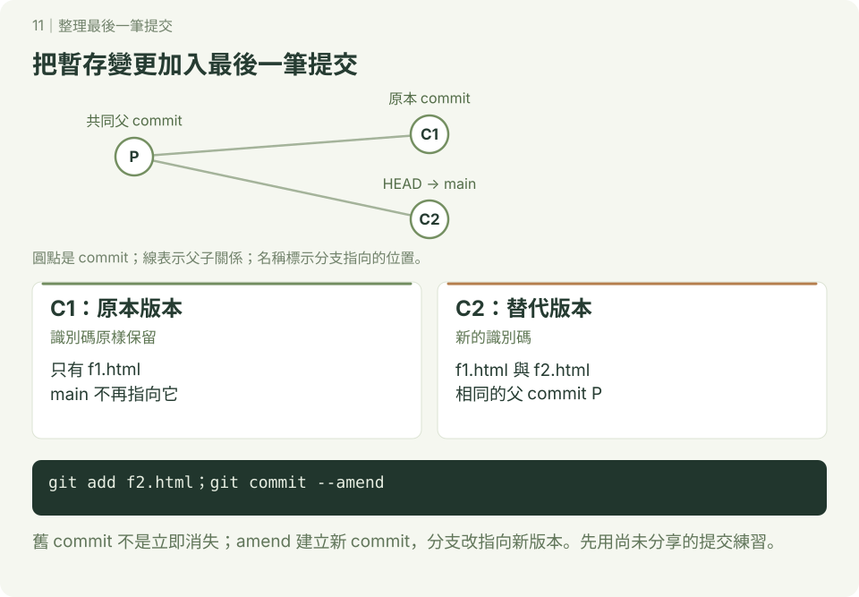

整理最後一筆提交
git commit --amend 用新的提交取代目前分支最後一筆提交，可以修正訊息或納入漏掉的檔案。新提交通常有新的識別碼；舊提交不會立即消失，但分支改指向新版本。

本章只練習尚未 push、尚未分享的提交。共享分支優先追加修正提交，避免讓同學的歷史分岔。
1. 照做：準備兩筆提交
已設定提交身分，使用終端機或 Git Bash，在尚無 amend-demo 的練習位置開始。
bash
mkdir amend-demo
cd amend-demo
git init -b main
printf '# 練習\n' > README.md
git add README.md
git commit -m "建立練習起點"
touch f1.html
git add f1.html
git commit -m "新增 f1，訊息待修正"
git log --oneline -2記下最新識別碼，稍後比較。
2. 只改最後一筆訊息
確認暫存區沒有要一起加入的變更，再執行：
bash
git diff --staged
git commit --amend -m "新增 f1.html"
git log --oneline -2預期仍只有兩筆提交，最新訊息已改，識別碼與之前不同。amend 會納入當時的暫存內容；若要在已有 staged 修改時只改訊息，可另外學習 git commit --amend --only -m "新訊息"。
3. 把漏掉的檔案一起納入
bash
touch f2.html
git add f2.html
git diff --staged
git commit --amend -m "新增 f1.html 與 f2.html"
git log --oneline -2
git show --stat HEAD
git status --short預期最後一筆同時新增 f1.html 與 f2.html，總數仍是兩筆，status 沒有輸出。若要保留原訊息，使用 git commit --amend --no-edit；只寫 --amend 通常會開啟編輯器，不會自動替你改好訊息。
4. 選 amend 還是新增 commit？
| 情況 | 建議 |
|---|---|
| 自己尚未分享的最後一筆有錯字或漏檔 | amend，提交前檢查暫存內容 |
| 新的獨立功能或修正 | 新增 commit，讓每筆用途清楚 |
| 最後一筆已分享給別人 | 優先新增修正 commit |
| 更早的提交要整理 | 完成基礎後閱讀 rebase |
想一想：最後一筆識別碼變了，前一筆為什麼仍相同？因為替代提交沿用相同父提交，沒有重新建立前一筆。
自己做：開一個新分支，在上面提交一份檔案，修正訊息，再補入漏掉的另一份檔案。完成標準：最後一筆包含兩份檔案，你能說明 amend 與一般 commit 的差別。
參考：git commit 官方文件。